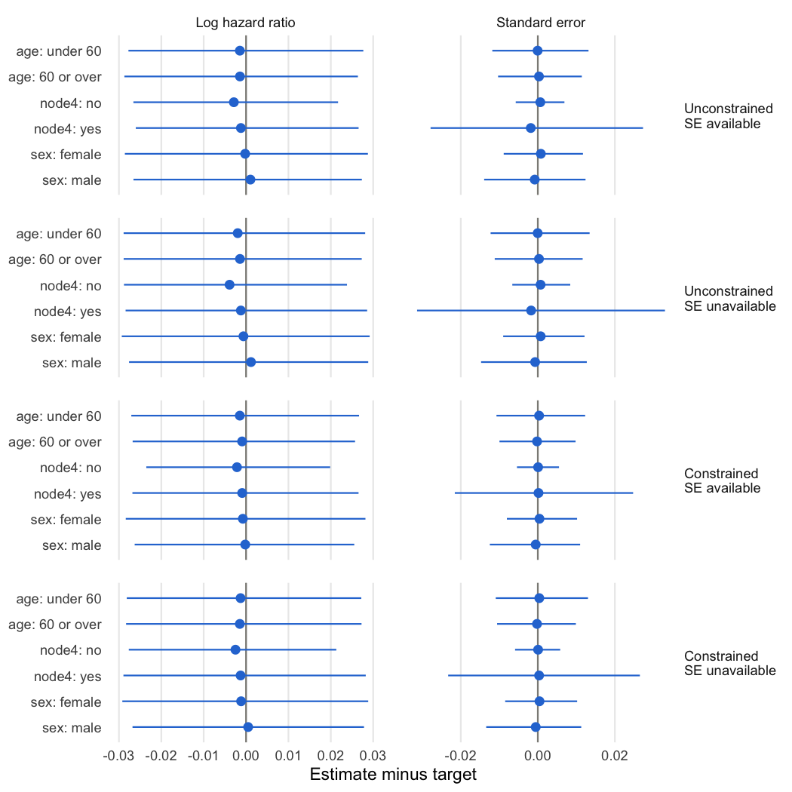
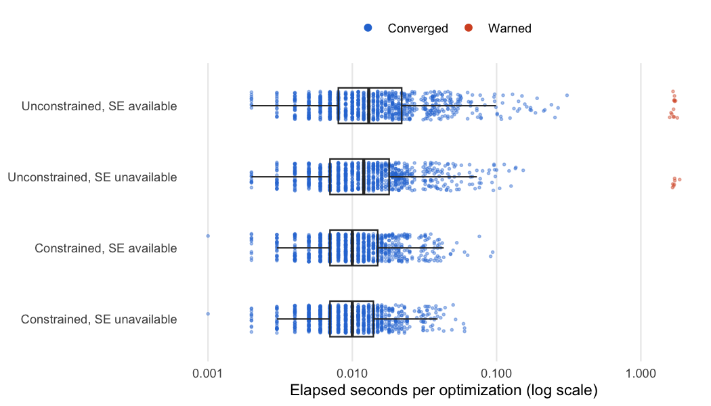

Show code
reps <- 1000L # Replications per method. Full scale: 1000L.
iterations <- 10000L # Maximum iterations per subgroup variable. Full scale: 10000L.
tolerance <- 1e-3 # Stop when the loss falls below this value. Full scale: 1e-3.Rendered on 2026-11-19 with retrogroup 0.0.1.9000 at
commit 1456151.
Purpose
vignette("optimization", package = "retrogroup") claims
that optimization refines a sampled dataset until its subgroup log
hazard ratios match the published ones. This vignette tests that claim
by simulation for group_optimize_unconstrained() and
group_optimize_constrained(), with and without published
standard errors. For each optimized dataset, it reports:
- how closely the log hazard ratios match their targets,
- how closely the standard errors match their targets, including when the optimizer never sees them,
- how long optimization takes, and
- how often optimization stops before the loss falls below the tolerance.
vignette("benchmarks_sampling", package = "retrogroup")
benchmarks the samplers, so this vignette tests optimization only.
Method
Design
A fair test needs targets that the optimizer can attain. Published statistics do not guarantee this: if an optimized dataset misses them, we cannot tell whether the optimizer failed or whether no assignment of subgroups attains them. So each replication creates its own targets. It assigns subgroups to the colon cancer patients, computes the summary statistics of that assignment, and uses those statistics as the targets. That assignment attains the targets exactly, so a solution with zero loss is known to exist.
The patients come from group_example_patient(), and the
summary statistics that seed each replication come from
group_example_summary(). Each replication of each method
does the following:
- Ground truth. Draw a sampled dataset from the colon cancer patients and the colon cancer summary statistics with the method’s sampler. Its subgroups are the ground truth of this replication.
-
Targets. Compute the summary statistics of the
ground truth dataset with
group_analysis_summary(), which fits the Cox modelsurvival::coxph(Surv(time, event) ~ treatment)to the patients in each subgroup level. The log hazard ratio and standard error of each level are the targets. - Starting point. Discard the ground truth subgroups, and draw a new sampled dataset from the colon cancer patients and the targets with the same sampler. The sampler sees the targets but never the ground truth subgroups.
-
Optimization. Optimize the starting point twice,
once in each standard error scenario:
- Standard errors available. The optimizer sees the target log hazard ratios and standard errors.
- Standard errors unavailable. The optimizer sees only the target log hazard ratios, as when a publication reports hazard ratios without confidence intervals.
-
Comparison. Compute the summary statistics of each
optimized dataset with
group_analysis_summary(), and subtract the targets. Also record the elapsed time of the optimizer and whether it warned.
We test two methods, each with its matching sampler in steps 1 and 3:
-
Unconstrained.
group_sample_unconstrained()andgroup_optimize_unconstrained(). -
Constrained.
group_sample_constrained()andgroup_optimize_constrained().
What the design shows
- Any mismatch is the optimizer’s. The ground truth subgroups attain the targets exactly, and they come from the same sampler as the starting point. If an optimized dataset misses its targets, the search failed to find a solution that exists.
- Each dataset is judged individually. If optimization works, every optimized dataset matches the targets of its own replication, not just on average.
- The scenarios differ only in what the optimizer sees. Both scenarios share the same starting point and the same targets. The second scenario therefore shows how well optimization reproduces standard errors that it never sees.
The comparison is between summary statistics only. Many assignments of subgroups attain the same statistics, so this benchmark does not ask whether optimization recovers the ground truth subgroups of individual patients.
We use only the colon cancer patients, which are real data.
vignette("benchmarks_sampling", package = "retrogroup")
adds a simulated example to isolate the samplers from misspecification
of the model behind group_analysis_probability(). The
optimizers fit the Cox model directly and do not use the subgroup
probabilities, so a simulated example would add little here.
Settings
Every optimization uses tolerance = 0.001 and at most 10000
iterations per subgroup variable. The loss is a sum of squares, so a
loss below this tolerance means that the optimized and target statistics
agree to roughly 0.032. Much smaller tolerances, such as the default of
1e-6, are rarely reachable with unconstrained flips on
these data, because the search tends to settle in a local minimum above
them.
A run stops as soon as its loss falls below the tolerance. A run
whose loss is still above the tolerance after the maximum number of
iterations stops there and throws a warning of class
"retrogroup_warning". We count that run as warned. The
elapsed time covers the call to the optimizer only, not sampling or the
computation of summary statistics.
Show code
methods <- list(
Unconstrained = list(
sample = group_sample_unconstrained,
optimize = group_optimize_unconstrained
),
Constrained = list(
sample = group_sample_constrained,
optimize = group_optimize_constrained
)
)
scenarios <- c("Available", "Unavailable")
# Display name and summary statistics column of each quantity we compare.
quantities <- c(
"Log hazard ratio" = "log_hazard_ratio",
"Standard error" = "standard_error"
)
# One label per row of a summary statistics data frame.
subgroup_label <- function(summary) {
paste0(summary$variable, ": ", summary$level)
}
# Row-bind one named element across a list of results.
collect <- function(results, name) {
do.call(rbind, lapply(results, `[[`, name))
}
# Call an optimizer. Record its elapsed time in seconds and whether it
# warned that the loss did not fall below the tolerance.
optimize_once <- function(optimize, start, summary) {
warned <- FALSE
seconds <- system.time(
optimized <- withCallingHandlers(
optimize(start, summary, iterations = iterations, tolerance = tolerance),
retrogroup_warning = function(condition) {
warned <<- TRUE
invokeRestart("muffleWarning")
}
)
)[["elapsed"]]
list(optimized = optimized, warned = warned, seconds = seconds)
}
# Pair each target with the achieved statistic of the same subgroup level.
# Returns one row per subgroup level and quantity.
compare <- function(targets, achieved) {
achieved <- achieved[
match(subgroup_label(targets), subgroup_label(achieved)),
]
rows <- lapply(names(quantities), \(quantity) {
column <- quantities[[quantity]]
data.frame(
subgroup = subgroup_label(targets),
quantity = quantity,
target = targets[[column]],
estimate = achieved[[column]]
)
})
do.call(rbind, rows)
}
# One replication of one method, following steps 1 to 5 of the Design
# section. Returns a list with estimates (one row per scenario, subgroup
# level, and quantity) and runs (one row per scenario).
replication <- function(method, colon) {
variables <- unique(colon$summary$variable)
# Step 1: ground truth.
truth <- method$sample(colon$patient, colon$summary)
# Step 2: targets.
targets <- group_analysis_summary(truth, variables)
# Step 3: starting point.
start <- method$sample(colon$patient, targets)
# Step 4: optimization. Each scenario shows the optimizer different inputs.
inputs <- list(
Available = targets,
Unavailable = transform(targets, standard_error = NA_real_)
)
results <- lapply(scenarios, \(scenario) {
run <- optimize_once(method$optimize, start, inputs[[scenario]])
# Step 5: comparison.
achieved <- group_analysis_summary(run$optimized, variables)
list(
estimates = cbind(scenario = scenario, compare(targets, achieved)),
runs = data.frame(
scenario = scenario,
warned = run$warned,
seconds = run$seconds
)
)
})
list(
estimates = collect(results, "estimates"),
runs = collect(results, "runs")
)
}
# Summarize the differences (estimate minus target) over replications:
# means, plus the 2.5% and 97.5% quantiles of the differences.
# Returns one row per method, scenario, subgroup level, and quantity.
summarize_estimates <- function(estimates) {
estimates$difference <- estimates$estimate - estimates$target
out <- stats::aggregate(
cbind(target, estimate, difference) ~
subgroup + quantity + scenario + method,
data = estimates,
FUN = mean
)
interval <- stats::aggregate(
difference ~ subgroup + quantity + scenario + method,
data = estimates,
FUN = stats::quantile,
probs = c(0.025, 0.975)
)
out$lower <- interval$difference[, 1L]
out$upper <- interval$difference[, 2L]
out
}
# Run many replications of every method. Returns a list with estimates
# (the output of summarize_estimates()) and runs (one row per optimization
# run).
benchmark <- function(colon, reps) {
by_method <- lapply(names(methods), \(name) {
results <- replicate(
reps,
replication(methods[[name]], colon),
simplify = FALSE
)
list(
estimates = cbind(method = name, collect(results, "estimates")),
runs = cbind(method = name, collect(results, "runs"))
)
})
estimates <- collect(by_method, "estimates")
runs <- collect(by_method, "runs")
# Factor levels fix the order of rows in tables and panels in figures.
estimates$method <- factor(estimates$method, levels = names(methods))
estimates$scenario <- factor(estimates$scenario, levels = scenarios)
estimates$quantity <- factor(estimates$quantity, levels = names(quantities))
estimates$subgroup <- factor(
estimates$subgroup,
levels = subgroup_label(colon$summary)
)
runs$method <- factor(runs$method, levels = names(methods))
runs$scenario <- factor(runs$scenario, levels = scenarios)
list(estimates = summarize_estimates(estimates), runs = runs)
}
# Show 3 decimal places, but switch to scientific notation with 3
# significant figures for nonzero values that would otherwise round to zero.
format_number <- function(x) {
ifelse(
x != 0 & round(x, 3L) == 0,
formatC(x, digits = 2L, format = "e"),
formatC(x, digits = 3L, format = "f")
)
}
# Label each combination of method and scenario, ordered by method and
# then by scenario.
panel_label <- function(method, scenario, sep) {
grid <- expand.grid(scenario = scenarios, method = names(methods))
factor(
paste0(method, sep, "SE ", tolower(scenario)),
levels = paste0(grid$method, sep, "SE ", tolower(grid$scenario))
)
}
show_table <- function(x) {
x <- x$estimates
# Rows of hr and se are in the same order because summarize_estimates()
# sorts by method, scenario, quantity, and subgroup.
hr <- x[x$quantity == "Log hazard ratio", ]
se <- x[x$quantity == "Standard error", ]
knitr::kable(
data.frame(
Method = hr$method,
`Standard errors` = hr$scenario,
Subgroup = hr$subgroup,
`Mean target log HR` = format_number(hr$target),
`Mean log HR` = format_number(hr$estimate),
`Log HR difference` = format_number(hr$difference),
`Mean target SE` = format_number(se$target),
`Mean SE` = format_number(se$estimate),
`SE difference` = format_number(se$difference),
check.names = FALSE
),
align = c("l", "l", "l", rep("r", 6L)),
row.names = FALSE
)
}
show_plot <- function(x) {
x <- x$estimates
x$panel <- panel_label(x$method, x$scenario, sep = "\n")
ggplot(x, aes(x = difference, xmin = lower, xmax = upper, y = subgroup)) +
geom_vline(xintercept = 0, color = "#8c8b86") +
geom_pointrange(color = "#2a78d6", size = 0.4) +
facet_grid(panel ~ quantity, scales = "free_x") +
scale_y_discrete(limits = rev) +
labs(x = "Estimate minus target", y = NULL) +
theme_minimal(base_size = 11) +
theme(
panel.grid.minor = element_blank(),
panel.grid.major.y = element_blank(),
panel.spacing = grid::unit(1, "lines"),
strip.text.y = element_text(angle = 0, hjust = 0)
)
}
show_runs_table <- function(x) {
seconds <- stats::aggregate(
seconds ~ scenario + method,
data = x$runs,
FUN = \(s) c(stats::quantile(s, c(0.5, 0.95)), max(s))
)
warned <- stats::aggregate(
warned ~ scenario + method,
data = x$runs,
FUN = \(w) c(length(w), mean(w))
)
knitr::kable(
data.frame(
Method = seconds$method,
`Standard errors` = seconds$scenario,
Runs = warned$warned[, 1L],
`Median seconds` = format_number(seconds$seconds[, 1L]),
`95th percentile seconds` = format_number(seconds$seconds[, 2L]),
`Max seconds` = format_number(seconds$seconds[, 3L]),
`Fraction warned` = format_number(warned$warned[, 2L]),
check.names = FALSE
),
align = c("l", "l", rep("r", 5L)),
row.names = FALSE
)
}
show_runs_plot <- function(x) {
runs <- x$runs
runs$panel <- panel_label(runs$method, runs$scenario, sep = ", ")
runs$warned <- factor(
ifelse(runs$warned, "Warned", "Converged"),
levels = c("Converged", "Warned")
)
ggplot(runs, aes(x = seconds, y = panel)) +
geom_jitter(
aes(color = warned),
height = 0.2,
width = 0,
size = 0.6,
alpha = 0.4,
show.legend = TRUE
) +
geom_boxplot(fill = NA, outlier.shape = NA, width = 0.5) +
scale_x_log10() +
scale_y_discrete(limits = rev) +
scale_color_manual(
values = c(Converged = "#2a78d6", Warned = "#d6542a"),
name = NULL,
drop = FALSE
) +
guides(color = guide_legend(override.aes = list(size = 2, alpha = 1))) +
labs(x = "Elapsed seconds per optimization (log scale)", y = NULL) +
theme_minimal(base_size = 11) +
theme(
legend.position = "top",
panel.grid.minor = element_blank(),
panel.grid.major.y = element_blank()
)
}Colon cancer example
We run 1000 replications of each method. Each replication optimizes twice, once per standard error scenario, so each method contributes 2000 optimization runs.
colon <- list(
patient = group_data_patient(
group_example_patient(),
arm = "arm",
treatment = "Lev+5FU",
time = "time",
event = "event"
),
summary = group_data_summary(
group_example_summary(),
variable = "variable",
level = "level",
patients = "patients",
log_hazard_ratio = "log_hazard_ratio",
standard_error = "standard_error"
)
)
set.seed(1)
colon_results <- benchmark(colon, reps = reps)Estimates
The targets vary from one replication to the next. The table reports means over replications of the targets, of the optimized estimates, and of their differences (estimate minus target).
| Method | Standard errors | Subgroup | Mean target log HR | Mean log HR | Log HR difference | Mean target SE | Mean SE | SE difference |
|---|---|---|---|---|---|---|---|---|
| Unconstrained | Available | age: under 60 | -0.170 | -0.172 | -0.001 | 0.170 | 0.170 | -5.24e-05 |
| Unconstrained | Available | age: 60 or over | -0.561 | -0.562 | -0.001 | 0.168 | 0.168 | 3.04e-04 |
| Unconstrained | Available | node4: no | -0.402 | -0.405 | -0.003 | 0.140 | 0.141 | 0.001 |
| Unconstrained | Available | node4: yes | -0.299 | -0.300 | -0.001 | 0.228 | 0.226 | -0.002 |
| Unconstrained | Available | sex: female | -0.133 | -0.134 | -2.07e-04 | 0.160 | 0.160 | 0.001 |
| Unconstrained | Available | sex: male | -0.655 | -0.654 | 0.001 | 0.181 | 0.180 | -0.001 |
| Unconstrained | Unavailable | age: under 60 | -0.170 | -0.172 | -0.002 | 0.170 | 0.170 | -3.55e-05 |
| Unconstrained | Unavailable | age: 60 or over | -0.561 | -0.562 | -0.001 | 0.168 | 0.168 | 3.04e-04 |
| Unconstrained | Unavailable | node4: no | -0.402 | -0.406 | -0.004 | 0.140 | 0.141 | 0.001 |
| Unconstrained | Unavailable | node4: yes | -0.299 | -0.300 | -0.001 | 0.228 | 0.226 | -0.002 |
| Unconstrained | Unavailable | sex: female | -0.133 | -0.134 | -0.001 | 0.160 | 0.160 | 0.001 |
| Unconstrained | Unavailable | sex: male | -0.655 | -0.654 | 0.001 | 0.181 | 0.181 | -0.001 |
| Constrained | Available | age: under 60 | -0.171 | -0.172 | -0.001 | 0.170 | 0.170 | 3.30e-04 |
| Constrained | Available | age: 60 or over | -0.557 | -0.558 | -0.001 | 0.168 | 0.168 | -2.00e-04 |
| Constrained | Available | node4: no | -0.403 | -0.405 | -0.002 | 0.140 | 0.140 | 7.62e-05 |
| Constrained | Available | node4: yes | -0.296 | -0.296 | -0.001 | 0.227 | 0.227 | 1.76e-04 |
| Constrained | Available | sex: female | -0.137 | -0.137 | -0.001 | 0.160 | 0.160 | 4.25e-04 |
| Constrained | Available | sex: male | -0.649 | -0.650 | -1.94e-04 | 0.181 | 0.180 | -0.001 |
| Constrained | Unavailable | age: under 60 | -0.171 | -0.172 | -0.001 | 0.170 | 0.170 | 3.80e-04 |
| Constrained | Unavailable | age: 60 or over | -0.557 | -0.559 | -0.001 | 0.168 | 0.168 | -2.11e-04 |
| Constrained | Unavailable | node4: no | -0.403 | -0.405 | -0.002 | 0.140 | 0.140 | 6.94e-05 |
| Constrained | Unavailable | node4: yes | -0.296 | -0.297 | -0.001 | 0.227 | 0.227 | 3.31e-04 |
| Constrained | Unavailable | sex: female | -0.137 | -0.138 | -0.001 | 0.160 | 0.160 | 4.33e-04 |
| Constrained | Unavailable | sex: male | -0.649 | -0.649 | 4.93e-04 | 0.181 | 0.180 | -0.001 |
The figure shows the same differences. Points are means over replications, and bars span the central 95% of replications. A narrow bar around zero means that each individual optimized dataset reproduces the targets of its own replication.

Colon cancer example: optimized estimate minus target for each subgroup level, quantity, method, and standard error scenario. Points are means over replications, and bars span the central 95% of replications.
Time and convergence
The table and figure summarize the optimization runs: the elapsed time of each run and the fraction of runs that warned that the loss did not fall below the tolerance.
| Method | Standard errors | Runs | Median seconds | 95th percentile seconds | Max seconds | Fraction warned |
|---|---|---|---|---|---|---|
| Unconstrained | Available | 1000 | 0.013 | 0.073 | 1.790 | 0.013 |
| Unconstrained | Unavailable | 1000 | 0.012 | 0.047 | 1.859 | 0.007 |
| Constrained | Available | 1000 | 0.010 | 0.030 | 0.094 | 0.000 |
| Constrained | Unavailable | 1000 | 0.010 | 0.027 | 0.060 | 0.000 |

Colon cancer example: elapsed seconds per optimization run, excluding sampling and summary statistics, for each method and standard error scenario. Each point is one run, colored by whether it warned that the loss did not fall below the tolerance.